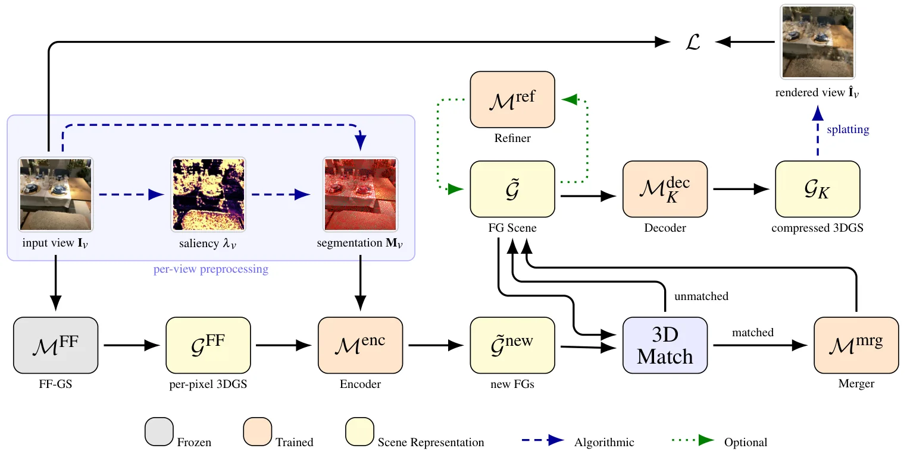
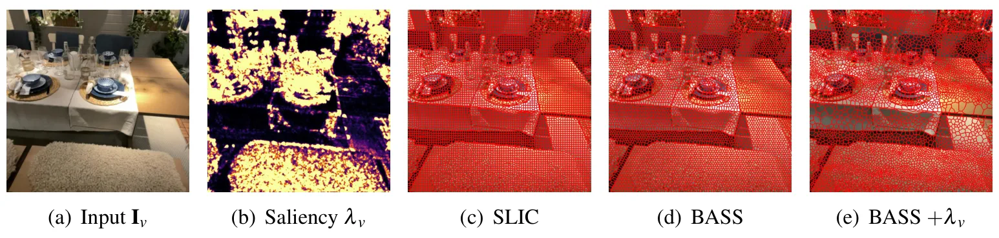
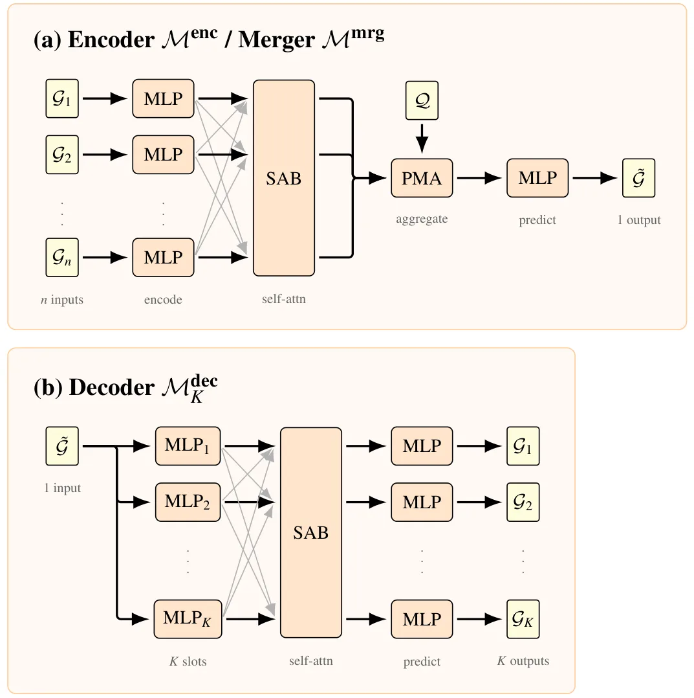

紧凑前馈式 3D Gaussians：显著性引导的基元合并Compact Feed-Forward 3D Gaussians via Saliency-Guided Primitive Merging
对 3DGS 地图内存、带宽和渲染效率具有直接价值，且可作为 backbone-agnostic 模块；几何一致性与下游定位性能尚未由摘要证明。
一句话工作总结
用显著性自适应聚类和跨视图 latent 合并，将前馈式逐像素 3DGS 压缩到约 1/20 基元。
摘要
该工作针对 feed-forward 3DGS 常按像素生成 Gaussian、表示高度冗余的问题，提出结构感知的后处理合并流水线。方法先用显著图引导自适应 superpixel segmentation，把空间连贯且外观相似的 Gaussians 聚类；再通过 learned encoder 压缩每个 cluster，依据几何重叠和特征相似性跨视图匹配合并，最后由 level-of-detail decoder 以可控分辨率输出。摘要称仅使用逐像素方法约二十分之一的 Gaussians 仍基本保持视觉质量。
3D scene reconstruction, modeling, and rendering are highly relevant for numerous tasks, and 3D Gaussian splatting has become a standard choice in this context. Its feed-forward variants provide fast reconstruction from sparse input views but often produce per-pixel primitives, leading to highly redundant and thus inefficient representations. We present a structure-aware merging pipeline that takes per-pixel primitives from any feed-forward method and consolidates them into a compact, content-adaptive Gaussian set while largely retaining visual quality at just $\frac{1}{20}^\text{th}$ of the Gaussians of a per-pixel method. We group spatially coherent Gaussians of similar appearance into variable-size clusters via adaptive superpixel segmentation guided by a saliency map, which allocates fine segments to textured regions and coarse segments to homogeneous areas. We compress each cluster into a compact latent representation through a learned encoder, then match and consolidate representations across views based on geometric overlap and feature similarity via a learned merger. A level-of-detail decoder then produces the final Gaussians at a controllable resolution, enabling a flexible quality-efficiency trade-off at inference. As a post-processing module, the pipeline is backbone-agnostic, leveraging the strengths of existing feed-forward methods. This leads to better and more robust quality than achieved by previous approaches that target a reduction in primitive count, while providing a highly compact representation, that can be rendered efficiently.
中文解读摘录
图表/页面预览

{kind=link}

{kind=link}

{kind=link}
